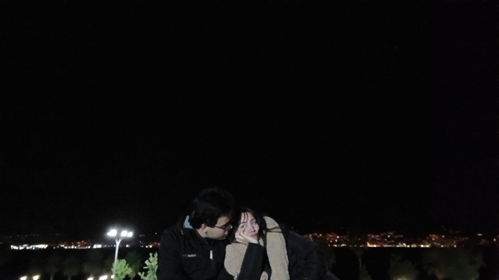
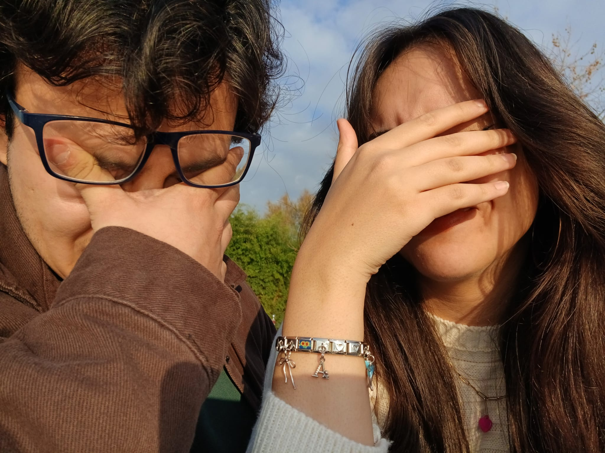
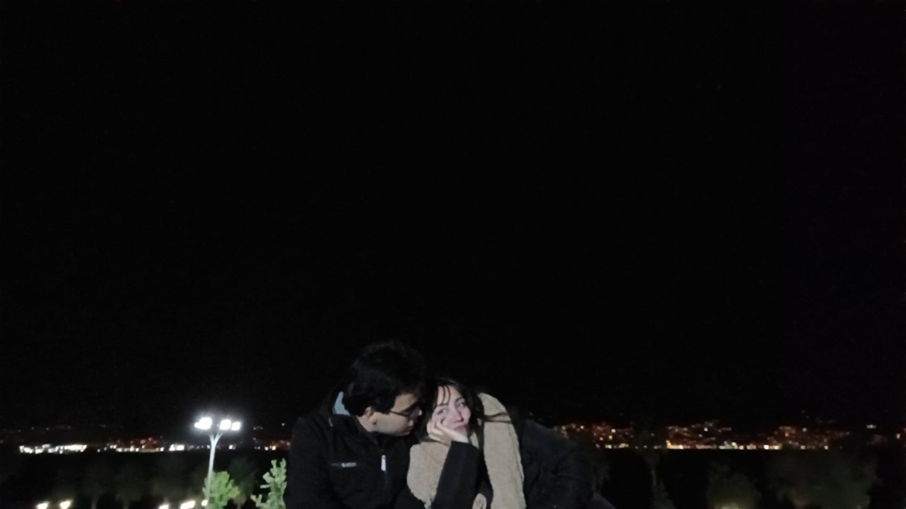
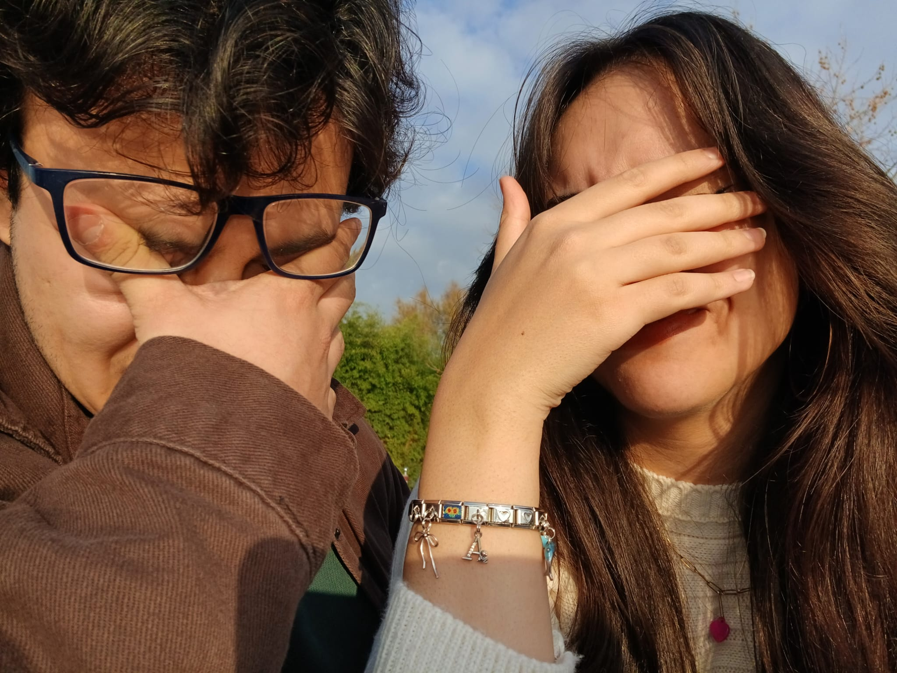
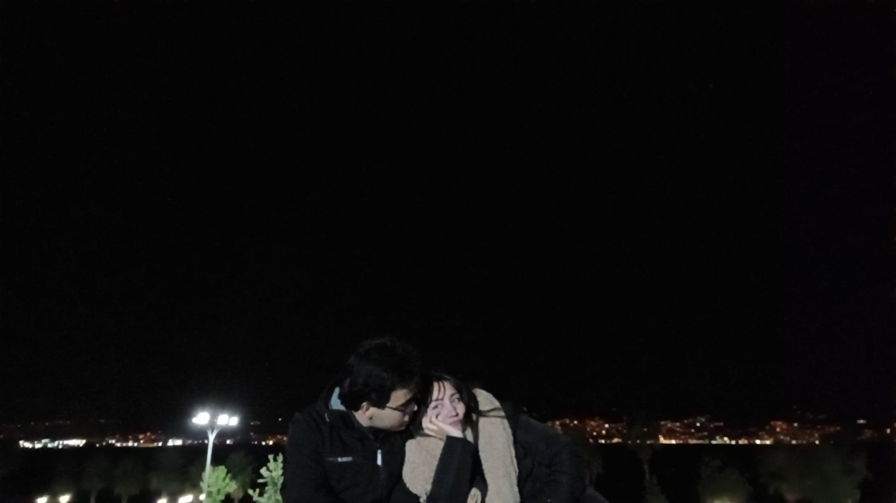
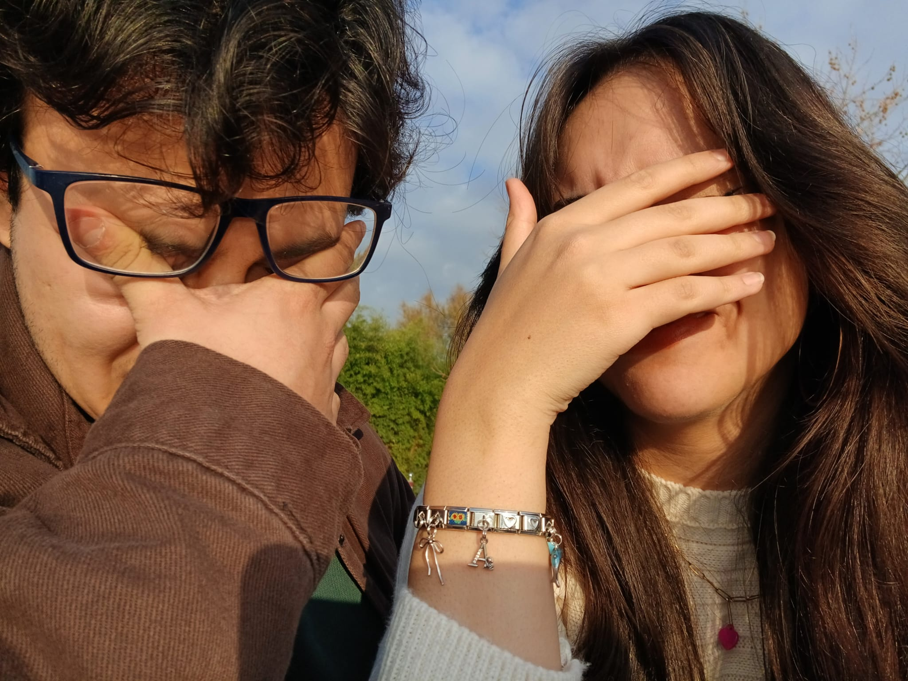
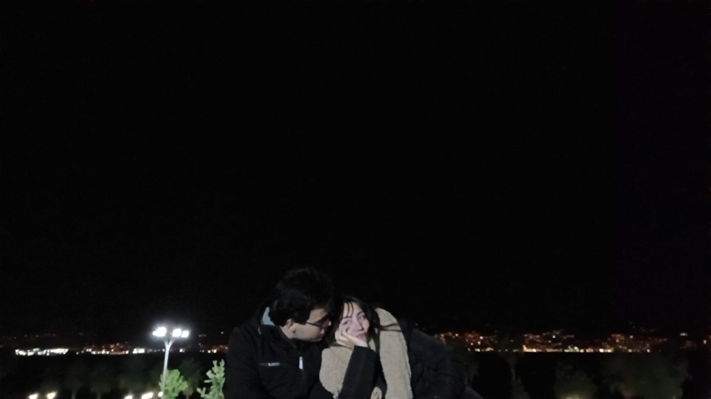
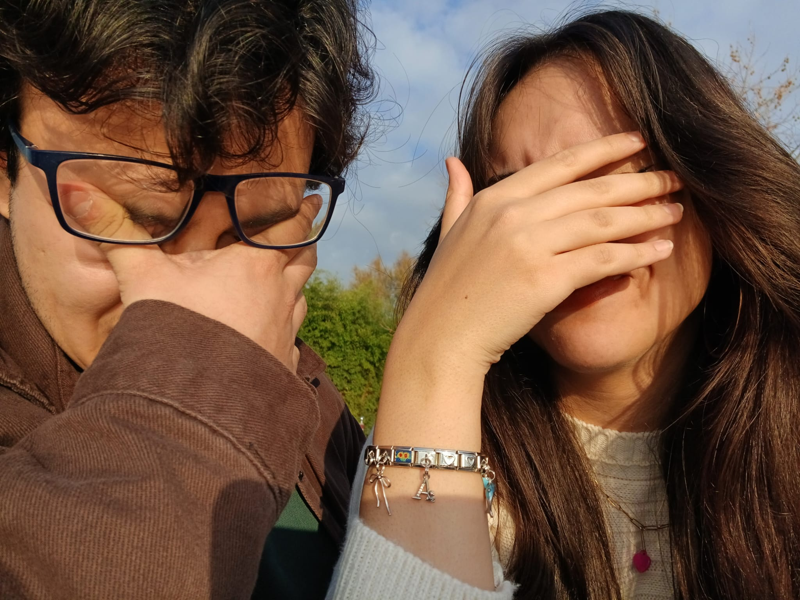

Güzeller Güzeli Gamze'me,
Bazen kelimeler hissettiklerimi tam anlamıyla anlatmaya yetmez ama
yine de deneyeceğim. Çünkü senin gibi birini bulmuşken, sevgimi ve
hissettiklerimi anlatmaktan asla vazgeçmem.
Sen hayatıma girdiğinden beri her şey daha anlamlı, daha güzel, daha
renkli. Senin gülüşün güneş gibi içimi ısıtıyor, sesin en güzel şarkı
gibi ruhuma huzur veriyor. En yorgun anımda bile, bir tek senin
varlığın beni toparlamaya yetiyor.
Sevgilim, seninle geçirdiğim her an bana aşkın en saf, en güzel halini
öğretti. Seninle birlikte olmak, elini tutmak, gözlerinin içine bakmak
benim için bu dünyadaki en büyük şans. Senin sevgin, en büyük hediyem.
Her anımızda yanımda olduğun için, beni olduğum gibi sevdiğin için, en
kötü günlerimde bile bana sarılmaktan vazgeçmediğin için sana sonsuz
teşekkür ederim. Seninle daha nice Sevgililer Günü kutlamak, hayatı
seninle yaşamak istiyorum.
Sonsuz sevgimle,
Seni çok seven Osmik